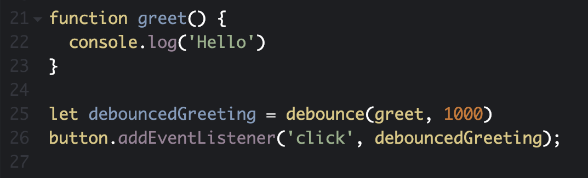

Debounce Functions
by Sarah Kaplan
Borrowed deck from Oleg Ilyenko c/o Juan Cluade Van Damme
Debounce Functions
- What is a debounce function?
- Demo
- Using debounce in React
What does a debounce function do?
Prevents a function from being called many times in succession
Common uses for a debounce function
- Window resize events
- Scroll events
- Demo
- returns a function that will not be called while it is being continuously invoked
- func is called after it stops being invoked for 'wait' milliseconds
- Uses setTimeout and closure
I'm too lazy to write a debounce function...
- loDash
- Awesome Debounce Promise (for React)
- Many of implementations of debounce have additional parameters
Using debounce with React

Jobly
Bugs to Avoid
- Remember to invoke the function that is returned from debounce
- In React: make one debounced copy (in the constructor)